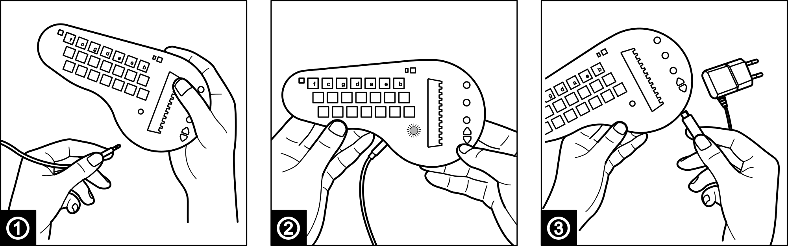
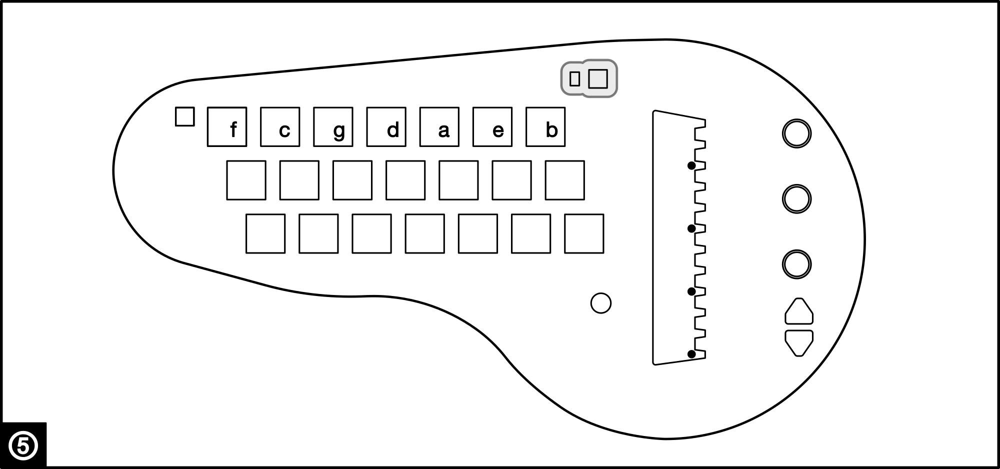
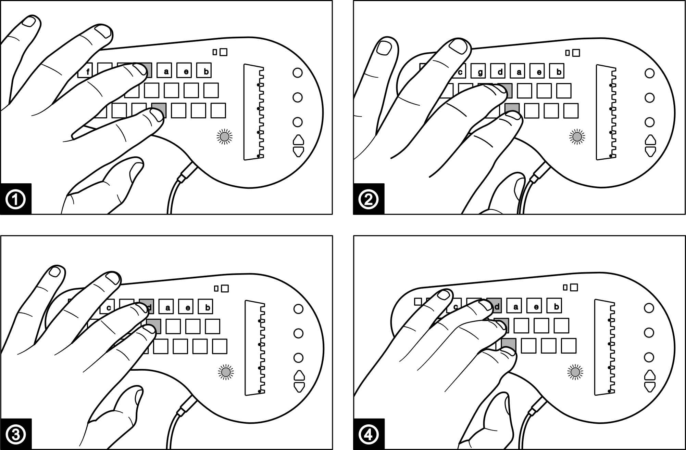
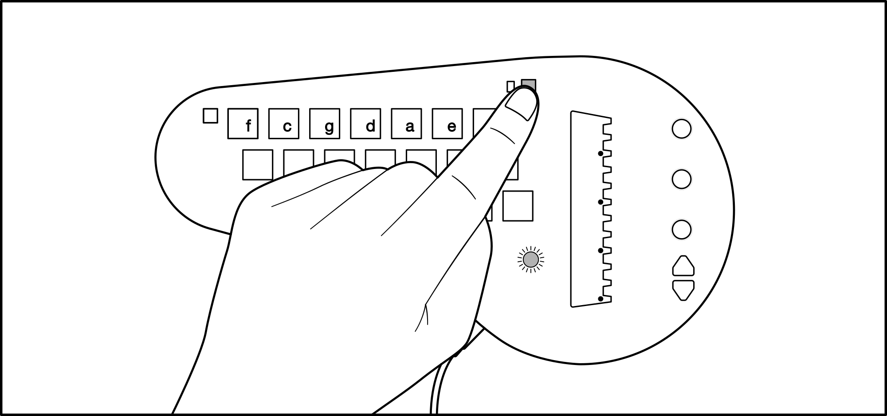
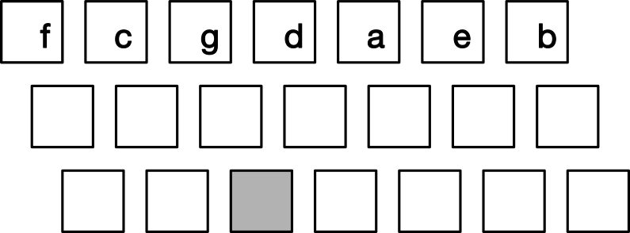
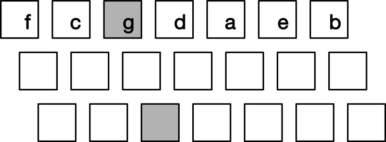
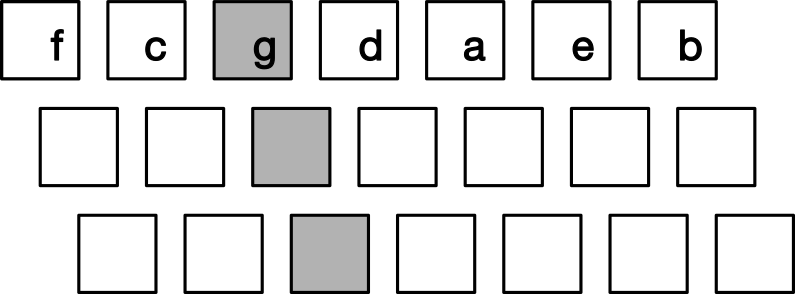

Getting started
If you have a kit version of the minichord, or wish to fully build one yourself, please refer to the "Assembly" section

To turn it on, simply plug the headphone jack in ①. The main led ② will shine. If it does not turn on, then its battery is empty, charge it on any USB wallwart with a mini USB cable ③.
Once it is started, push one of the square buttons ④. You should hear a chord being played. If you do not hear a sound, check that the first potentiometer is not fully turned left ⑤. The chord will vary depending on which button you press.
Now drag your finger across the black vertical bar ⑥. You should hear the sound of multiple notes being played sequentially, like a harp. If you do not hear that, check that the second potentiometer is not fully turned left ⑦. Those notes depend on the selected chord. Push different square buttons and test the way the harp reacts.
That's it, you got started!
To switch the minichord off, simply remove the headphone jack. Don't forget it plugged in or it will empty its battery!
Basic usage

① Chord selector buttons
The minichord has :
- 21 main chord buttons, divided into 7 column of 3 buttons;
- 1 "sharp" button (on the top left).
Each column of the main chord buttons is associated with a note of the C Major scale. It is indicated by the letter on the first row of buttons.
Each row of the main chord button is associated with a chord type:
- the first row will produce major chords;
- the second row will produce minor chords;
- the third row will produce 7th chords.
By following the row and the column of each button, we can identify the specific chord associated. Here is the full table of the chords available by the push of a single button:
| F | C | G | D | A | E | B | |
|---|---|---|---|---|---|---|---|
| F maj | C maj | G maj | D maj | A maj | E maj | B maj | Maj |
| F min | C min | G min | D min | A min | E min | B min | Min |
| F7 | C7 | G7 | D7 | A7 | E7 | B7 | 7th |
The "sharp" modifier button (top left) will add a semitone to each note of the chord, and can be added to any combination of the main chord buttons.
⚠ In the basic usage only one chord button is pushed at a time to trigger a new chord. However, it is possible to combine buttons to construct more complex chords. This is explained in the "Advanced usage" section.
② Harp touch zone
The harp touch zone is divided into 12 different sections, stacked vertically. Touching each section will trigger a note. Notes can be held by keeping in contact with the section.
This touch zone can be "strummed" by sweeping the finger across all sections, or individual notes can be triggered.
③ Preset selection buttons and indicator
The preset selection buttons can be used to switch between presets. The minichord has 12 internal presets (see "Default presets"), that can be replaced by custom presets (see "Making custom presets"). Going up after the 12th preset will circle back to the first, same as going down before the first will circle back to the 12th.
The main led will shine with a different color for each preset to help you identify the current selected one.

④ Potentiometers
Each of the three potentiometers has one main function, designated by the marking on the enclosure :
- The first potentiometer from the top sets up the volume of the chord section;
- The second potentiometer from the top sets up the volume of the harp section;
- The third potentiometer from the top is assigned to a different function for each preset, depending on what is usefull for it.
⚠ Each of the potentiometers has a secondary function, which is explained in the "Advanced usage" section.

⑤ Rythm mode button and indicator
The rhythm mode button (on the top right) has two basic modes:
- discrete: the chord only stays on for as long as you keep the relevant button pushed. In that mode, the indicator led will be off.
- continuous: the chord will keep playing until you push a new button, and seamlessly switch to the next chord. In that mode, the indicator led will be on.
Simply push the rhythm mode button to switch from one mode to the other. That button may also be used to switch to the arpeggiator mode with a long push, but that subject is handled in the "Advanced usage" section.
⑥ Charging
Charging is done through the mini USB jack available on the bottom right of the minichord. Connection to any USB outlet will do, and it will draw 500ma of current.
When charging, the top right led will shine red.
Full charge should be below 3 hours, and the top right led will shine green once the full charge is attained. Once fully charged, the minichord will play for around 7 hours.
When the battery is getting low, the main led will pulse. Once the pulsing starts, the minichord can play for around 15 minutes more. You can play the minichord while plugged in.
Advanced usage
Advanced chord selections
There is two ways to access additional chords on the minichord:
By combining buttons within the same column.

It is possible to push more than one button within the same column to access more complicated chords. The possible combinations are the following:
- The button from the third row can be combined with a button from either the first or the second row of the same column to obtain a Major 7 (①) and Minor 7 (②) chord of the same note;
- The first and second row buttons can be combined within a column to obtain an augmented chord (③);
- The three buttons together can be combined to obtain an diminished chord (④).
⚠ Please note that chord change always happens when a button is pushed. Simply releasing buttons will not change the chord. This is because properly timing a release is difficult with pushbuttons and it would lead to unwanted chord change when switching from a complex chord position. For example...
By combining buttons across different columns
When a chord is selected within a column (even a complex one), it is possible to replace one of the notes with the fundamental from another column.
To do that simply push any button from the column of the note you wish to borrow the fundamental from.
Usually, the replaced note is the fundamental of the chord and the substitution is known as a "slash chord", written for example Am/E for an A minor chord with E as the fundamental. However, this is not the case for all presets. That setting is indicated per preset in the Default presets section.
⚠ Due to the way the "sharp" button works, some slash chords are impossible to do on the minichord. For example, Am/G is possible, Am#/G# is possible (by holding the "sharp" modifier button), but Am#/G is not.
Secondary potentiometer functions
Each of the potentiometers allows you to access a secondary function. The specific secondary function will depend on the selected preset, and is indicated per preset in the Default presets section.
To access the secondary function, you need to hold the "sharp button" while turning the potentiometer.
⚠ Please note that the secondary parameter value selected will be memorized by the minichord, but only if you switch between presets (to avoid having to write to memory the selected value with every parameter change).
Arpeggiator
The minichord has a very basic arpeggiator function, allowing to play 16 steps pattern on the four voices of the chord section. To activate the arpeggiator, do a long (more than 1 second) press on the "rhythm" button (on the top right). The led will flash rythmically and the arpeggiator will start.

While the arpeggiator is playing, you can move from chord to chord by using the chord buttons as usual.
⚠ Depending on the current playing pattern, that change may not be immediately applied and might wait until the next "strong beat". Strong beats are indicated by the rhythm led flashing a brighter than the normal flash.
While in arpeggiator mode, the rhythm button will function as a "tap tempo". By tapping it rhythmically, you can change the current tempo of the arpeggiator.
To exit the arpeggiator mode, do once again a long press on the "rhythm" button.
Following chord charts
A good way to use the minichord, especially if you want to cover some popular songs, is to use readily available chord charts.
Chord charts are a simplified kind of tablature that only includes the lyrics and the chord of the song. Usually, the chords are written on top of the lyrics, at the moment where they are supposed to happen in the song.
Chord charts are very easy to find, usually all it takes is to google the name of the song followed by "chords".
They usually look like this:
A Am
I'm not in love, so don't forget it,
G#m7 G#7 C#m C#m7
It's just a silly phase I'm going through.
A Am
And just because I call you up,
G#m7 G#7
Don't get me wrong,
C#m C#m7
Don't think you've got it made.
Extract from the chord chart of "I'm not in love" by 10cc
As we see, to be able to play such a chord chart, we need to have a basic understanding of the way chords are commonly written. Since there is no widely accepted standard, it may vary slightly between chord charts.
In the below table, we show the way chords are commonly written in a chord chart and how to play them on the minichord, with G for our fundamental:
| Full chord name | Common notations | Button selection pattern |
|---|---|---|
| Major chord | G, G major | |
| Minor chord | Gm, Gminor, Gmi, G_ | |
| Dominant 7th chord | G7, G Seven, Gdom |  |
| Major 7th chord | Gmaj7, GΔ, GΔ7, GM7, Gma7 |  |
| Minor 7th chord | Gm7, G_7, Gmi7, Gmin7 | |
| Augmented chord | Gaug, G+ | |
| Diminished chord | Gdim, G° |  |
| Slash chord | G/F (for F substitution ) |
Most of the time, the chords are easily playable on the minichord. If not, it is almost always possible to find acceptable substitutions, but that might require a bit more theoretical knowledge for the player (for example to calculate which slash chord might be an acceptable ersatz for a complex chord).
Default presets
The following section presents the 12 default presets, in order.
[TBD]
Custom presets
Making custom presets is a lot more involved, so it is to be reserved to more advanced users. However, if there is an issue, you can always restore the default presets, so feel free to experiment.
Presets are designed with an interface called minicontrol. In addition to designing your own presets, it allows you to manage the presets loaded into the 12 memory slots of your minichord, which includes loading presets shared by other users.
minicontrol user manual
Please note that minicontrol is a fully offline program, if you wish to access it when you don't have an internet connection, simply use the "save page as" option of the browser (CMD+S) to save it locally.
First you need to connect your minichord to minicontrol.
To do that, first open minicontrol in a compatible web browser. We recommend using Google Chrome on desktop, because of its support of WebMidi sysex commands.
Then connect your minichord to the computer with a USB mini cable. Please make sure that the cable used is not "charge-only" and supports data.
Reload the webpage. You should be shown a prompt asking you to "Control and reprogram youy Midi Devices". Allow it. This is necessary to send Midi sysex commands that are used to programm the minichord.
The minichord should then be connected. If not, a red warning should give you instructions to allow you to identify which step failed.
You can then circle around the presets on your minichord using the preset selection buttons on the minichord.
The associated internal parameters will be displayed on the screen.
Those parameters are grouped in three categories :
- "Global parameters": general parameters that impact the general functioning of the preset. It includes the reverb settings that is applied to both the chord and the harp, and the potentiometer function settings;
- "Harp parameters": parameters related to the sound synthesis of the harp part of the minichord;
- "Chord parameters": parameters related to the sound synthesis of the chord part of the minichord.
By hovering on each parameter name (a question mark will appear), a short description of its function will be displayed on your screen.
You can start experimenting by modifying settings and seeing how it impacts the sound of your preset. Note that by default, changes made are not loaded into the minichord. Simply using the preset selection buttons to go one preset up then one preset down will reset the current preset.
You can then use the command buttons to modify the presets loaded on your minichord
minicontrol offers the following control buttons:
- "Save current settings to selected bank": by using the dropdown to choose a bank number, you can save the current parameters to the selected bank slot. This can be used to copy presets from one bank to another;
- "Reset selected bank": by using the dropdown to choose a bank number, you can reset the parameters of the selected bank slot to factory settings
- "Reset all banks": this button simply puts the minichord to factory settings by resetting all bank slots
It also allows you to share your presets and to load presets made by other users, with two additional buttons:
- "Share setting": this button will copy in your clipboard a parameter string. This parameter string fully describes the current setting playing on the minichord.
- "Load setting": this button will prompt a text entry. By pasting a parameter string it will be loaded on your minichord for you to test it. Please note that if you wish to save it into a bank slot of your minichord, you will need to use the "Save current setting to selected bank" button.
If you have a preset that you wish to share with all minichord users, please send the preset string with a short description and the name of your preset to presets@minichord.com.
Synthesis schematic
To be able to better understand the synthesis parameters, please find below the synthesis schematics for the harp and chord section :
Harp section ┌ ─ ─ ─ ─ ─ ─ ─ ─ ─ ─ ─ ─ ─ ─ ─ ─ ─ ─ ─ ─ ─ ─ ─ ─ ─ ─ ─ ─
┌────────────────────────────────────────────────────────┐│ x12
┌┴───────────────────────────────────────────────────────┐│
┌─────────┐ │┌────────────────┐ │││
│DC signal├────────────────────────▶││filter enveloppe│──────────┐ ┌───────────────┐││
└─────────┘ │└────────────────┘ └─────────▶│low-pass filter│││├───┐
┌───────────┐ ┌────────────────┐ │┌─────────────────────┐ ┌────────┐ ┌─▶│ │││ │
│vibrato OSC├──▶│vibrato envelope├┬▶││modulated string OSC ├─▶│envelope├─┘ └───────────────┘││┘ │
└───────────┘ └────────────────┘│ │└─────────────────────┘ └────────┘ ├┘ │
│ └────────────────────────────────────────────────────────┘ │
┌───────────┐ ┌────────────────┐│ │
│ bend DC ├──▶│ bend envelope ├┘ │
└───────────┘ └────────────────┘ │
│
┌──────────────────────────────────────────────────────────────────────────────────────────────────┘
│ ┌──────────┐ ┌─────────────┐ ┌─────────────┐ ┌─────┐ ┌────────────┐ ┌──────────┐
├─▶│waveshaper├─▶│ waveshaper ├┬▶│ delay mix ├─▶│delay├─▶│filter delay├─┬───▶│effect mix├───────┐
│ └──────────┘ │ mix ││ │ │ └─────┘ └────────────┘ │ ┌─▶│ │ │
└───────────────▶│ ││ │ │ │ │ └──────────┘ │
└─────────────┘│ └─────────────┘ │ │ │
│ ▲ │ │ │
│ └─────────────────────────────────┘ │ │
└────────────────────────────────────────────┘ │
┌──────────────────────────────────────────────────────────────────────────────────────────────────┘
│ ┌──────────┐ ┌─────────────┐ ┌──────┐ ┌──────────┐
└─────────────▶│multiplier├─────────────▶│output filter├┬▶│reverb├─▶│reverb mix├─▶ output
┌───────────┐ │ │┌──────────┐ │ ││ └──────┘ │ │
│tremolo OSC├─▶│ ││filter OSC├─▶│ │└──────────▶│ │
└───────────┘ └──────────┘└──────────┘ └─────────────┘ └──────────┘
Chord section ┌──────────────────────────────────────────────────────────────────────┐
┌┴─────────────────────────────────────────────────────────────────────┐│ x4
┌┴─────────────────────────────────────────────────────────────────────┐││
┌┴─────────────────────────────────────────────────────────────────────┐│││
┌───────────┐ │┌────────────────┐ ┌───────────────┐ ┌─────┐ ┌──────┐ ┌──────────┐││││
│vibrato OSC├─▶ ││vibrato envelope├┬▶│modulated OSC 1├─▶│ mix ├─▶│filter├─▶│multiplier│││││
└───────────┘ │└────────────────┘│ ├───────────────┤ │ │ └──────┘ └──────────┘││││
┌───────────┐ │┌────────────────┐├▶│modulated OSC 2├─▶│ │ ▲ ▲ ││││
│ bend DC ├─▶ ││vibrato envelope├│ ├───────────────┤ │ │ │ │ ││││────────┐
└───────────┘ │└────────────────┘└▶│modulated OSC 3├─▶│ │ │ │ ││││ │
│ └─────────┬─────┤ │ │ │ │ ││││ │
│ │noise├─▶│ │ │ │ ││││ │
┌──────────┐ │┌───────────────┐ └─────┘ └─────┘ │ │ ││││ │
│filter OSC├──▶ ││filter envelope├──────────────────────────────────┘ │ ││││ │
└──────────┘ │└───────────────┘ │ ││││ │
┌───────────┐ │┌────────────────┐ │ ││├┘ │
│tremolo OSC├─▶ ││tremolo envelope├─────────────────────────────────────────────┘ │├┘ │
└───────────┘ │└────────────────┘ ├┘ │
└──────────────────────────────────────────────────────────────────────┘ │
│
┌──────────────────────────────────────────────────────────────────────────────────────────────────┘
│ ┌──────────┐ ┌─────────────┐ ┌─────────────┐ ┌─────┐ ┌────────────┐ ┌──────────┐
├─▶│waveshaper├─▶│ waveshaper ├┬▶│ delay mix ├─▶│delay├─▶│filter delay├─┬───▶│effect mix├───────┐
│ └──────────┘ │ mix ││ │ │ └─────┘ └────────────┘ │ ┌─▶│ │ │
└───────────────▶│ ││ │ │ │ │ └──────────┘ │
└─────────────┘│ └─────────────┘ │ │ │
│ ▲ │ │ │
│ └─────────────────────────────────┘ │ │
└────────────────────────────────────────────┘ │
┌──────────────────────────────────────────────────────────────────────────────────────────────────┘
│ ┌─────────────┐ ┌──────┐ ┌──────────┐
└─▶│output filter├┬▶│reverb├─▶│reverb mix├─▶ output
│ ││ └──────┘ │ │
│ │└──────────▶│ │
└─────────────┘ └──────────┘
MIDI support
When plugged in to a computer through USB, the minichord will appear as a MIDI instrument exposing two separate MIDI port. The first port carries the MIDI signal from the chord section, and the second port from the harp section. The minichord has to be turned on to appear, so make sure that an audio output cable is plugged in to the minichord.
For example, using the "Audio MIDI Setup" utility of macOS we can look at the characteristics of the minichord
The potentiometers control the volume of each port (MIDI CC 7). All notes are sent to the channel 0 of each port. Each port can be independently assigned to virtual instruments by most music softwares. For example, using Surge XT, using the option screen allows to select which midi input to active.
The minichord stays usable with softwate that does not distinguish between ports (such as GarageBand), but all of the notes will be attributed to a single instrument.